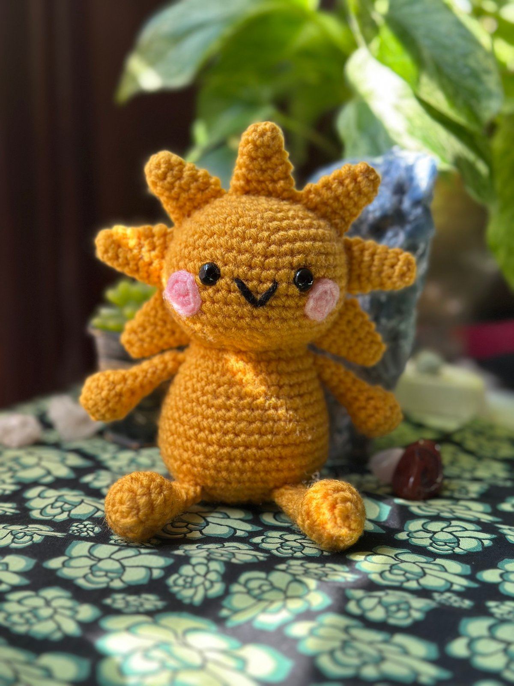

Add your best full-body Solly photographAmigurumi · Original design · 2026
Solly the Sun
Solly is a cheerful, plump little sun with seven individually attached rays, tiny limbs, and a simple embroidered smile. The design focuses on approachable construction with thoughtful shaping and finishing details.
Solly is available as a finished handmade piece through Oddly Knotted and as a professionally written crochet pattern on Ravelry.
AmigurumiOriginal patternTwo sizes
日本語で読む · Read in Japanese
ソリー・ザ・サン
ソリーは、七つの光の飾りと小さな手足、刺しゅうの笑顔がある、かわいい太陽のあみぐるみです。作りやすい形と、細かい仕上げを大切にしてデザインしました。
完成品は Oddly Knotted で、編み図は Ravelry でご覧いただけます。